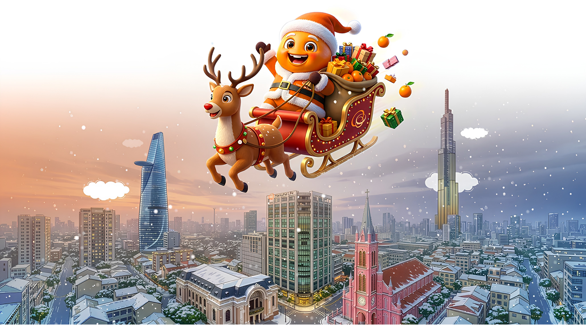
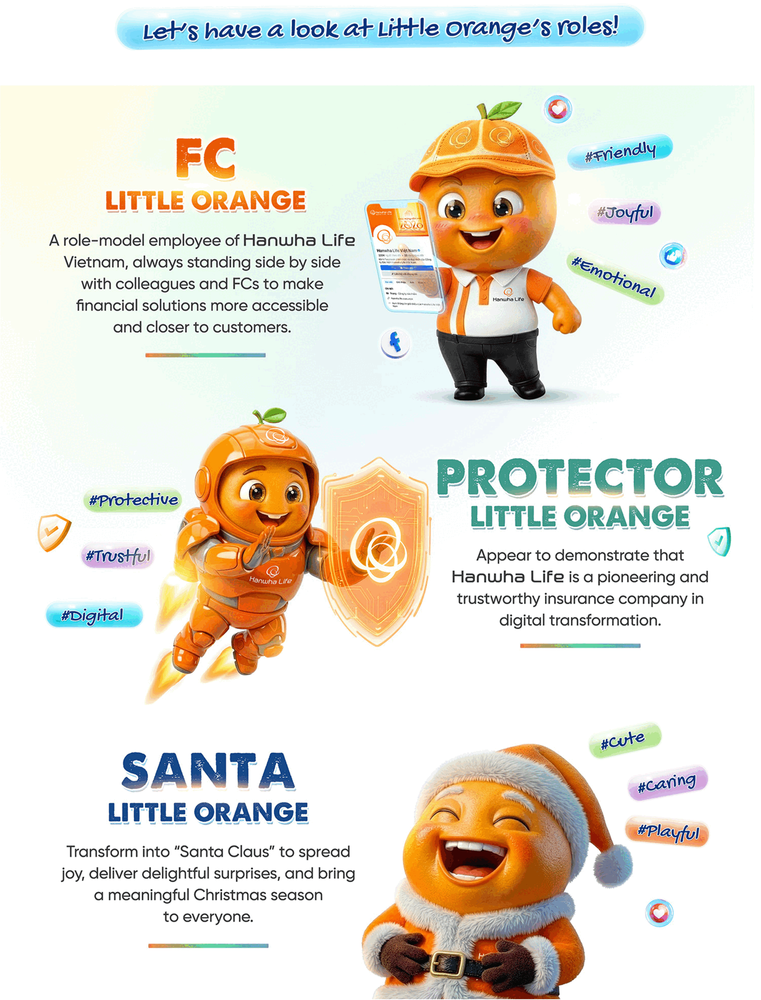
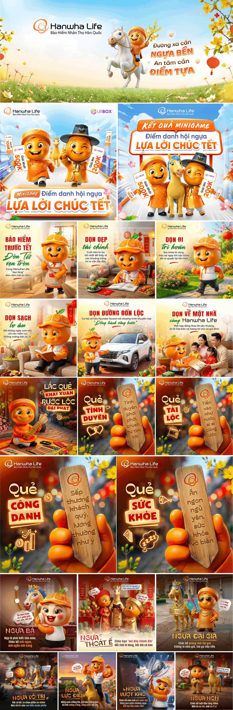

Ideate & Lead: Originated the mascot concept and led end-to-end execution from idea to launch.
Visual Development: Directed mascot design from initial sketching to finalized visual system and applications.
Content Strategy & Execution: Planned content direction (pillars & calendar), handled copywriting, development key visuals/posters, and managed publishing & performance tracking on social.
Project Expansion: Led scale-up initiatives including new visual iterations, physical mascot ideation, and IP registration.
Background
The Vietnamese life insurance market is currently saturated with formal, repetitive content that focuses strictly on benefits and claims, resulting in a lack of trend-responsive engagement and a significant emotional disconnect with Gen Z.
Insight
Social consumers don't dislike insurance; they dislike how it talks to them. Instead of a "serious expert" focused on risk, they crave an authentic companion who speaks their language and provides engaging, relatable content that feels less like a commercial.
Idea
Introducing "Bé Cam", an AI Brand Mascot designed to act as a friendly bridge between the brand and its audience. By positioning Bé Cam across social and offline platforms, the project breaks the industry's stiff, corporate mold, replacing formal distance with genuine engagement.

Visual Design
The visual development of Bé Cam began with hand-drawn sketches to establish the character's look and proportions before leveraging AI to generate a high-fidelity overall visual. Each AI-generated output is retouched to fix technical artifacts, integrate brand logos, and ensure a professional finish.
Social Activation
Soft launch
Bé Cam debuted by "hijacking" the Christmas season, utilizing festive key visuals to test audience receptivity with a fresh, joyful atmosphere. By reframing insurance benefits through trending, youthful content instead of traditional ads, the soft launch achieved significant organic traction, garnering nearly 1 million views and 300,000 interactions.
Official launch
Following its success, Bé Cam was officially established as the brand's face, supported by a versatile design library for various platforms. This phase prioritizes consistent, trend-driven content and conversational storytelling over traditional corporate monologues. By keeping the mascot at the heart of daily social interactions, the brand fosters genuine dialogue and remains deeply relevant to the modern digital experience.


Off social activation
Bé Cam's presence extends beyond digital screens through high-quality physical costumes designed for direct engagement at offline events